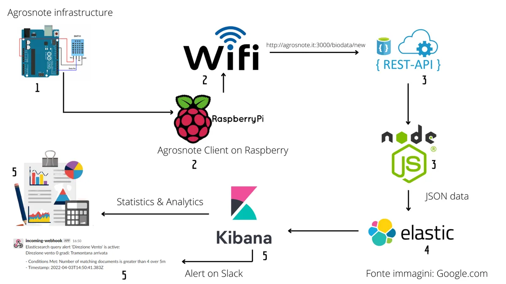
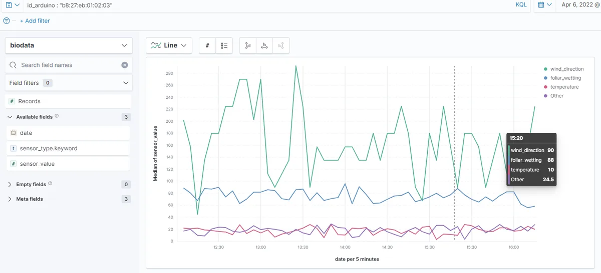
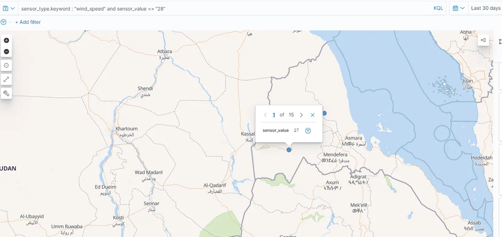
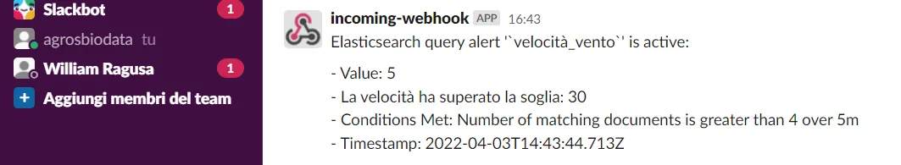
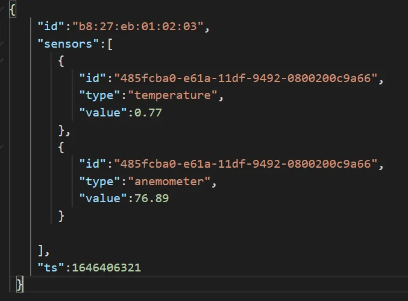

Tesi di laurea · 2022
BioData
Un sistema di stream processing che raccoglie i dati dei sensori agricoli, li analizza in tempo reale e avvisa quando una coltura è in pericolo.
Tesi di laureaOpen source










Di cosa si tratta
I sensori nei campi misurano temperatura, umidità, vento, luce e composizione del suolo. Con questi dati un'azienda agricola può risparmiare acqua e fertilizzanti, prevenire malattie e proteggere le piante da gelo e vento. BioData è la pipeline che rende questi dati utilizzabili, sviluppata insieme ad AgrosNote.
Un esempio concreto: in una serra di pomodori le piantine giovani temono il vento forte. Quando un sensore supera i 30 km/h parte un alert sul canale Slack di chi gestisce quel lotto, che può chiudere la serra prima che ci siano danni.
Il sistema era destinato a uno scenario reale: l'azienda agricola Colle d'Oro di Ispica (RG), a supporto degli agronomi.
Tesi di laurea triennale in Informatica al Dipartimento di Matematica e Informatica dell'Università di Catania. Relatore: prof. Salvatore Nicotra. Correlatore: Daniele Contarino. Laurea il 29 aprile 2022.
Cosa fa
- Raccolta dei dati via API REST (Node.js ed Express) dai dispositivi sul campo, basati su Arduino e Raspberry Pi.
- Indicizzazione in tempo reale in Elasticsearch.
- Dashboard Kibana con statistiche sui valori e geospaziali.
- Alert configurabili su Slack ed email, per lotto di terreno.
- Simulatore di sensori per i test e intero stack orchestrato con Docker Compose.
Scelte tecniche
- Tempo reale, non batchUn allarme sul vento serve adesso, non a fine giornata: la pipeline indicizza ogni lettura appena arriva.
- ELK invece di PLGNella tesi ho confrontato lo stack Elastic con Prometheus, Loki e Grafana. Elastic ha vinto per le query complesse, gli alert e le mappe.
- Node.js per l'IoTUn server leggero e asincrono, adatto a tante piccole richieste da dispositivi diversi.
Ti serve qualcosa di simile?
Sviluppo siti, web app e app per iOS e Android, dall'idea alla pubblicazione. Raccontami il tuo progetto.
Scrivimi